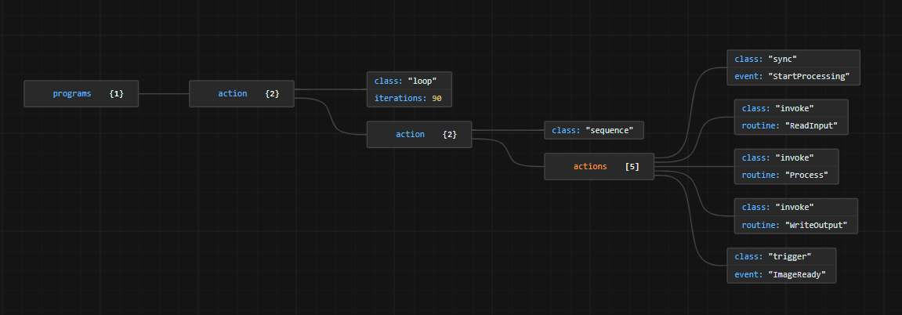

Runtime Concepts¶
Overview¶
We will now define the main entities of the Runtime framework, some of which have already been partially used in the example above.
Task: A task is a light weight, self-contained unit that can be executed independently. Tasks are typically smaller and more numerous than threads, but rather than being managed by the OS scheduler, they are managed by the Runtime.
Routine: Routine is a user defined function or a closure which can passed to a task. In Rust this could be fn, fnonce or fnmut.
For use cases such as running tasks in a linear order, executing tasks based on a condition, or running tasks in a loop, users can utilize Actions.
Actions: Actions are building blocks that can be used to define the execution flow of tasks.
Sequence: Executes all contained actions sequentially.
Concurrency: Executes multiple branches concurrently, with each branch representing an individual action. The action completes when all branches have finished execution.
Computation: Similar to Concurrency, with the distinction that the action concludes when any single branch has finished execution.
IfThenElse: Evaluates a condition and executes either the true action or the false action accordingly.
Loop: Repeats execution of all contained actions.
Break: Exits the loop it is currently in.
For: Iterates over its body a fixed number of times. An exit condition is not always necessary in a Loop. However, one can use the Loop in conjunction with a Computation, for instance, to let it "terminate" on some exit condition.
TryCatch: Executes a try action and catches exceptions based on a specified exception mask. If an exception matching the mask occurs, the catch action is executed.
Throw: Throws an exception with an optional timeout.
Invoke: Executes a task synchronously in the caller's context.
Await: Executes a task asynchronously.
Sync: Completes execution upon the occurrence of a specified event (happening).
Trigger: Triggers a specified event (happening).
Sleep: Completes execution after a specified duration has elapsed.
The Runtime framework allows combining/linking the actions to describe an execution flow, thereby forming a higher-level construct referred to as a Program.
Program: A program is an entity used to construct an execution flow through the use of Actions. To facilitate the creation of scalable and complex systems, Programs can be chained up using Syncs and Triggers to synchronize the execution order.
To synchronize on the execution flow based on happening, users can use Events.
Events: Events describe a happening and are passed to Sync and Trigger actions. They are used to link actions across Programs that are chained up across memory/process boundaries. For example, an event can be utilized across process boundaries to link the Sync action of Program A with the Trigger action of Program B, which is deployed on a different OS processes.
Engine: An engine is the entity which abstracts the OS resources like threads, CPU affinity etc. and runs the tasks.
Cooperative Task Execution:
Tasks are added to the queue and the worker threads pull the tasks, when a task on the thread cannot progress anymore and yields.
Tasks run in a cooperative manner, thereby minimizing the overhead associated with thread context switching.
Ensures efficient resource utilization by allowing other tasks to execute while waiting.
Functional Overview¶
The following diagram shows an overview of Program's actions.

A visual representation of an example Program configuration is presented in the following image.
A visual representation of how programs are deployed on os process and internals of engine.

Engine¶
The most important entity of the Runtime framework is the Engine, which is responsible for running Programs.
Implementation In a Nutshell¶
Since a Program is also a task for the Engine, multiple Programs can be mapped to an Engine, which executes them using cooperative multitasking. Rust's async model is used to run these tasks. In Rust, defining an async block creates a future. Unlike in other languages, a Rust future does not represent a background computation; instead, it embodies the computation itself. The future's owner is responsible for progressing execution by polling it using Future::poll. In this case, the Program's core functionality is an async block that returns a future. This future is polled to drive the Program forward. Internally, it contains actions, and each action's respective functionality is executed as the future advances.
Execution scenarios¶
Cooperative task execution
For tasks that primarily wait for a trigger from an event, such as the Sync action linked to a notifier-event model, the execution follows a cooperative approach. When a task is unable to proceed due to waiting for an event, other tasks continue to run until the waiting task is activated by the event—this activation may be initiated by another action or an external program. This summary outlines how the Engine schedules and run tasks through task switching rather than thread switching.
Concurrent execution using worker pool
For CPU-bound, computationally intensive tasks, the Engine provides a worker pool. The Await action allows marking tasks as CPU-bound, signaling that they should be handled differently. The Engine then enqueues these tasks and passes them to a thread pool. The worker pool pulls tasks from this queue and executes them, ensuring efficient utilization of system resources.
Parallel execution
For use cases involving independent tasks that can run in parallel based on available resources, the Concurrency action, along with the Await action, can be used to define this behavior in the Program. The Engine executes all Await actions within the Concurrency action block in separate threads by passing them to the worker queue. Meanwhile, the Engine monitors the progress of the Concurrency action without blocking the main/supervisor thread, as other tasks continue running cooperatively. This ensures efficient parallel execution while maintaining overall system responsiveness.
Priority-based execution
For Programs with different priorities—such as those mapped to different ASIL (Automotive Safety Integrity Level) levels from the safety concept—multiple Engines can be used. Each Program can be assigned to a specific Engine, and the Engine's priority attribute ensures that higher-priority Programs (tasks) run on higher-priority threads compared to lower-priority Programs. This prioritization mechanism helps manage execution based on criticality, ensuring that safety-critical tasks receive the necessary processing resources.
Interfaces¶
qor_rto::prelude¶
The mod: qor_rto::prelude provides all the crates needed for the users to develop application using Runtime.
API Reference¶
Please refer to API documentation in the source code.
Typical development flow with Runtime¶
In traditional multi-threaded application development, developers are tasked with managing various aspects such as thread management, resource allocation, synchronization, and Task dependencies. However, with the utilization of Runtime, developers are relieved from these responsibilities and can focus solely on the application logic in terms of Tasks, i.e., Routines.
Application development using the Runtime framework involves the following steps:
Splitting functionality into Programs to define the execution flow.
Developing Programs using tasks and leveraging actions to structure their execution order.
Registering tasks, state variables, and other necessary components.
Subsequently:
Deploy the Programs on the Engine to execute them.
Configure the Engine with task, thread, and CPU information for optimal execution.
Configuration: There are two main configurations: - The program configuration that contains actions and is configurable using the Program builders in the code. - The engine configuration that consists of number of threads, priority and core affinity. It is configurable using the Engine builder in the code.
Program: The Program can be configured in the code using the Program builders with the actions described above.
Engine: The engined can be configured in the code using the Engine builder with number of threads, priority and core affinity.
Tracing¶
In the future, the Runtime will include support for tracing of control flow and visualizing trace data with Trace Compass/Eclipse. The plugin provided by the Runtime will analyze trace data from both kernel and user spaces, providing visualizations as shown in the image below.

This will help to debug and fine tune deployment configuration.